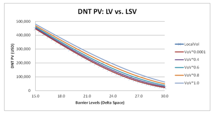
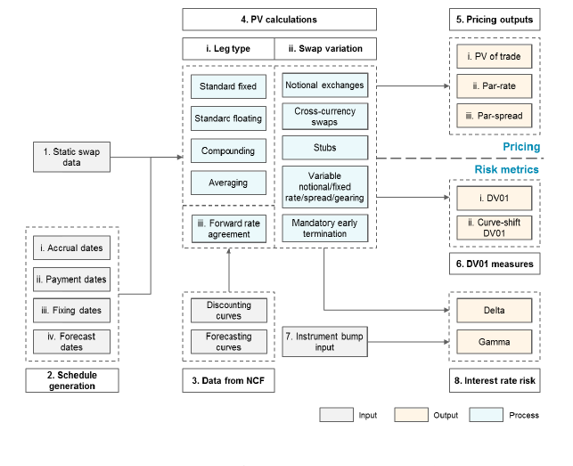
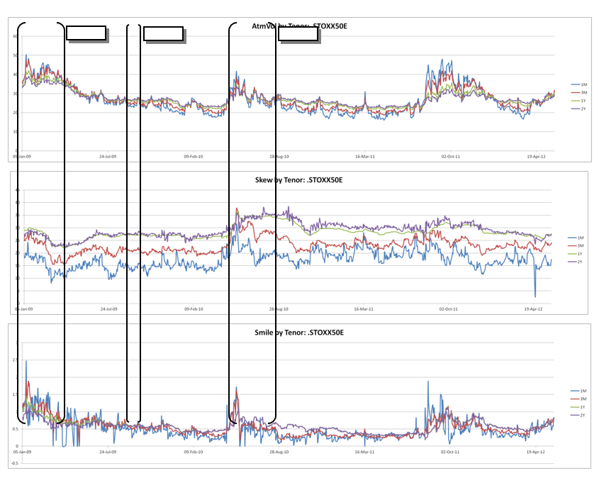
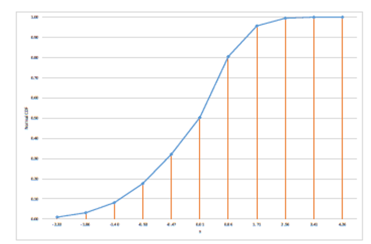

Analytical Sigma Volatility (ASV)#
Table of Contents#
Analytical Sigma Volatility (ASV)
Comparison of ASV and Taylor Models with Varying Intraday Steps
1. Executive Summary#
The Analytical Sigma Volatility (ASV) is a parameterization of the volatility by strike for the reference maturities. It has been designed to create a common parameterization for single-stock and index volatilities, which historically relied on different parameterizations due to their varying liquidity profiles. The ASV parameterization is a structured approach to modeling volatility surfaces for both single stocks and indices. Its design emphasizes simplicity, stability, and compatibility across different asset classes. Below are the key aspects:
ASV Parameters#
Non-fitted Parameters (3):
Reference Forward: Derived from the forward curve at fitting time.
Ctrl_CandCtrl_P: User-defined parameters affecting the flattening of the vol curve for higher (Ctrl_C) and lower (Ctrl_P) strikes, respectively. For backward compatibility, ASV supports a singleCtrlparameter input, setting bothCtrl_CandCtrl_Pto the same value.
Fitted Parameters (5):
These control the volatility level at the reference forward, skew, convexity, and the wings (Put for lower strikes and Call for higher strikes). These parameters are fitted as described in [1].
Advantages of ASV#
Minimal number of parameters, reducing overfitting.
Orthogonal parameters for better interpretability.
Stable parameters ensuring consistency under market stress.
Agrees with market consensus on wing behavior.
Limitations of ASV#
Minimal parameters limit flexibility in tuning the fit.
High wings present numerical challenges, such as Monte Carlo convergence issues.
Testing and Validation#
Back-testing on Indices: A 3.5-year time series (January 2009 to May 2012) was tested on SX5E and DAX indices during a period of high market stress. Fit quality and local volatility quality were verified.
Implied Volatility Fitter Framework: Back-testing was performed on the implied volatility fitter framework with SPX and two single names (one large cap and one small cap), as described in [1].
Implications and Recommendations#
Strengths: ASV provides a unified, stable, and interpretable framework for both indices and single stocks.
Addressing Limitations: Consider hybrid models for additional flexibility and advanced simulation techniques for high-wing challenges.
Future Enhancements: Incorporate machine learning for dynamic parameter adjustments and extend back-testing to modern market conditions.
2. Scope#
2.1 Model Purpose and Intended Usage#
The ASV volatility has been designed to be used globally for all equity underlyings as a volatility-strike parameterisation.
Time Interpolation: Used to compute the volatility by strike for non-reference maturities, is independent of the ASV parameterisation. It is performed by the volatility surface class. Time interpolation is discussed in [2].
CCAR Volatility Scenarios: These are independent of the parameterisation used for the liquid maturities. The bumping mechanism is described in [2].
Arbitrage Monitoring: Calendar and butterfly arbitrages that can arise from negative forward vol or negative PDF are not covered in this document. At fitting time, the volatility fitter framework monitors the forward vol and butterfly arbitrage to ensure that the volatility is arbitrage-free. The volatility fitter is described in [1].
2.2 Conceptual Soundness#
The implied volatility surface is constructed using a discrete set of market data (implied volatilities or prices) for different strikes and maturities. Broadly speaking, two major approaches are used by financial institutions:
Stochastic Volatility Models:
Examples include Heston (as described in [3]) and SABR (preferred due to its analytical approximations as described in [4]).
Limitations:
Struggle to fit liquid listed maturities.
Time-consuming and not suitable for continuous automated fitting of liquid names.
Parameters are non-intuitive.
Parametric Representations:
Examples include quadratic functions of moneyness (presented in [5]) and SVI (described in [6]).
Limitations:
SVI has non-intuitive parameters, and wing parameters are not orthogonal.
[7] shows that SVI might not be arbitrage-free in all situations.
At Barclays, bespoke parametric representations were developed due to the need for:
A fast calibration of volatility surfaces for all traded underlyings.
An intuitive parameterisation where each parameter has a “strike-localised” impact.
Initial polynomial-based parameterisations were developed:
Taylor Parameterisation: Used by the index desk, it had the highest number of parameters, allowing it to fit highly liquid listed maturities of indices.
Shortcomings of Taylor:
Over-parameterisation leading to overfitting or instability in parameters.
Reliance on cutoffs along the strike axis to define functionals for regions (polynomial around the forward and exponential on the wings, as described in section 14.2), causing irregularity problems and poor local volatility.
Inadequate for single stocks due to their low liquidity, necessitating different parameterisations and sacrificing potential synergies.
ASV was designed as a replacement for Taylor to address these shortcomings. Key benefits of ASV include:
Minimal number of parameters.
Orthogonal parameters.
Stable parameters.
Agreement with market consensus on the wings.
A flexible parametric form that fits both Single Stocks and Indices volatility specifics.
While ASV offers advantages over legacy models, it introduces new challenges:
The minimal number of parameters gives less flexibility to tune the fit compared to Taylor.
ASV often gives higher implied volatilities on the wings and for front maturities close to expiry, posing numerical challenges such as slower Monte Carlo convergence.
Unlike SABR and SVI, ASV does not come with built-in constraints to avoid butterfly arbitrage. However, the fitting framework addresses this by using butterfly arbitrage constraints for all liquid maturities.
ASV remains flexible enough to allow good fits for names with high liquidity under different regimes (described in section 8.1) using intuitive parameters that behave as expected under stressed market conditions.
ASV relies on solving a cubic equation for its parametric form and does not use other numerical techniques, probability distributions, or simulation pathways.
3. Product / Payoff / Portfolio#
3.1 Description#
This section describes the financial products, payoffs, or portfolios that interact with the Analytical Sigma Volatility (ASV) parameterization. These could include options, futures, or other derivatives whose pricing and risk management rely on the volatility surface constructed using ASV.
Financial Products: Single-stock options, index options, variance swaps.
Payoff Structures: Vanilla options, exotic options, structured products.
Portfolio Context: Risk assessment and hedging strategies across multiple assets.
3.2 Inputs#
Inputs required for applying the ASV parameterization:
Market Data: Implied volatilities, underlying asset prices, forward curves.
User-Defined Parameters:
Ctrl_C,Ctrl_P, reference forward.Additional Inputs: Strike grid, maturity dates.
3.3 Outputs#
Outputs generated by the ASV parameterization:
Volatility Surface: Continuous implied volatility as a function of strike and maturity.
Local Volatility Surface: For pricing models like Monte Carlo.
Risk Metrics: Sensitivities (Greeks) such as Vega, Delta, Gamma.
Arbitrage-Free Validation: No-butterfly-arbitrage confirmation.
4. Model / Methodology#
4.1 Description#
4.1.1 Overview#
ASV is a parametric form that expresses the implied volatility as a function of the strike for the liquid maturities. Time interpolation is independent from the liquid maturities parameterisation and is done as described in the European option QA doc [2]. The smile is described thanks to the following parameters for each listed maturity:
ATM Volatility
Skew
Smile
Put Wing
Call Wing
These parameters are stated explicitly for each maturity until an optional term structure start date, which is different for each parameter. The term structure is used to imply the ATM vol/skew/smile/wing parameters for each liquid maturity falling after the term structure start date.
Typically, an ASV vol surface definition will contain the two following parts:
A matrix of parameter values per maturity:
Maturities |
AnchorStrike |
atmVol |
skew |
smile |
wc |
wp |
|---|---|---|---|---|---|---|
22-Feb-11 |
86.78 |
53.35 |
53.35 |
0.2 |
0.09 |
0.04 |
25-Feb-11 |
86.8 |
53.35 |
53.35 |
0.2 |
0.09 |
0.03 |
26-Feb-11 |
86.81 |
55.35 |
54.35 |
0.2 |
0.04 |
0.03 |
01-Mar-11 |
86.83 |
56.35 |
51.35 |
0.2 |
0.02 |
0.02 |
26-Mar-11 |
87.04 |
55.85 |
50.35 |
0.2 |
0.01 |
0.02 |
Optional term structure (TS) for each parameter. If a TS definition is provided for a parameter, and if a listed maturity is after the TS start date, the TS implied parameters override the values provided in the previous grid.
Start |
Tower |
PD |
Pinf |
T1 |
P2 |
Decay |
Type |
|---|---|---|---|---|---|---|---|
(arrow) |
3 |
36.04 |
31.01 |
1 |
33.51 |
1 |
DoubleRegenerated |
Index |
2 |
56.03 |
17.28 |
2 |
35.07 |
1 |
DoubleRegenerated |
Scale |
0 |
0.61 |
0.25 |
0.05 |
14.4 |
1 |
Moderboard |
Cell |
0 |
0.08 |
0.01 |
0.08 |
0 |
1 |
Moderboard |
Put |
0 |
0.08 |
0.01 |
0.08 |
0.7 |
1 |
Moderboard |
Some extra parameters are used:
Control parameters (
Ctrl_CandCtrl_P): Allow the implied volatility to tend towards a flat level asymptotically for high values in the log-moneyness strike space. These parameters are usually static once a name has been set up initially to be fitted with ASV. Low values ofCtrl_CandCtrl_Pare appropriate for names with good liquidity on the wings. In practice, these parameters are set initially to 0.2. This value has been chosen after comprehensive testing, which included long-dated variance swap quotes. It can be fine-tuned over time, especially when evidence from the variance swap market indicates that this needs to be done.Anchor strikes: The strikes where the volatility is equal to the ATM Vol parameter. Typically, these strikes are equal to the forward. These are set by the volatility fitter to be equal to the forward.
Lambda parameters: Currently set to 0. It has been designed to be used for volatility dynamics (as the spot moves). It ranges between 0 and 1. If set to 0, re-anchoring the vol would be done by setting the ATM vol to the vol at the new reference as read from the original vol. If set to 1, the new vol will be computed by following the skew (keeping the skew parameters the same). This is currently deactivated and will not be covered in this document.
4.1.2 Term Structure Parameters#
Three parameterizations are available for the term structure:
4.1.2.1 Smooth TS with Double Exponential#
This TS uses a double exponential interpolation. An exponential term would control the short term, and the second one would control the long term: \( P_t = a_c e^{-\frac{t}{decay}} + b_c e^{-\frac{10t}{decay}} + c \) This term structure is defined by these parameters:
\( P_0 \): Parameter value at \( T_0 \) (internally set to 1 day).
\( P_\infty \): Parameter value at \( T_\infty \) (internally set to 10 years).
\( P_1, T_1 \): Parameter value at provided date.
The functional form factors are then implied by inverting the 3 equations that derive from these parameters.
4.1.2.2 Smooth TS with Single Exponential#
This is a simplified version of the double exponential TS with fewer parameters:
This term structure is defined by these parameters:
\( P_0 \): Parameter value at \( T_0 \) (internally set to 1 day).
\( P_\infty \): Parameter value at \( T_\infty \) (internally set to 10 years).
4.1.2.3 Non-Smooth TS#
This TS is used for smile, put, and call terms. It has been validated empirically by fitting the vols on very liquid names. The fits showed a behavior where the parameter would decrease in the short term and then increase. The term structure is again defined using the same parameters as the one used in the smooth case. However, \( T_0 \) is set internally to 5 days, and \( T_\infty \) is set to 5 years. This has been approached by the following functional form:
4.1.3 Parameterisation#
For a maturity \( T \), fixed strike \( K \), and anchor strike \( F \), the volatility \( \sigma(k) \) is the maximum real solution satisfying the equation below:
a) For \( \text{smile} \geq 0 \):#
where \( \tilde{\sigma} \) is the solution of:
b) For \( \text{smile} < 0 \) and \( 1_{K \leq F} \text{Put} + 1_{K \leq F} \text{Call} \geq 0 \):#
where \( \tilde{\sigma} \) is the solution of:
4.1.4 Adjustment for Negative Wings#
Even when the call value is zero, the above formula returned vols exhibiting a skew on the higher strikes side, which tends to overestimate the market consensus. Negative calls in the cubic equation would imply the needed negative slope. However, as the strike increases:
The \( k^+ \) term increases.
The \( \frac{\text{call}}{\sigma^4(k)} k^4 \) term decreases.
This makes the vol drop further, which implies a further decrease in the \( \frac{\text{call}}{\sigma^4(k)} k^4 \) term.
Hence, the vol ends up collapsing to 0.
In order to introduce a natural cut-off, the last term is transformed into: \( \text{call} \cdot k^+ \cdot [\sigma(k)] \), where \( f \) is an increasing function of the vol (as \( \sigma(k) \) decreases, it counters the impact of increasing strikes in the call term). In order to have an easy-to-solve and continuous function, we chose this form:
4.1.4.3 Adjustment for Negative Smile#
The initial implementation of ASV, which is the case (a) in section 4.1.3, can only guarantee the existence and continuity of the solution when the smile is non-negative. Please refer to sections 4.1.5.3 and 4.1.6 for more details. In order to get a continuous solution with a negative smile as well, a two-step process is introduced, as described in cases (b) and (c) in section 4.1.3. In the first step, the negative smile and Call/Put wing parameters are floored by zero, and the solution of the corresponding equation is denoted by \( \tilde{\sigma} \). In the second step, \( \sigma \) is solved with an adjusted formula, which is the same as the original equation with scaled parameters and zero smile. Please refer to sections 4.1.7 and 4.1.8 for more details. Hence, the existence and continuity of both \( \sigma \) and \( \tilde{\sigma} \) can be implied from the existence and continuity of the non-negative smile scenario.
and \(\hat{\sigma}\) can be implied from the existence and continuity of non-negative smile scenario.
4.1.4.4. Term structure motivation#
ASV “parameter term-structure” has the purpose of defining the ASV skew/smile/wing parameters for the liquid maturities in terms of a smaller number of parameters, in particular for more illiquid market vols. They overwrite the input ASV parameters by the parameterised form.
4.1.5 Solving the variance equation for positive wings#
The vol equation can be rewritten as:
4.1.5.1. Existence of a solution#
A real positive solution at least exists as:
4.1.5.2. Solution#
4.1.5.2.1. Implemented solution#
This paragraph summarises the detailed derivation in 14.1.
Let’s start by introducing intermediate values:
As described in 14.1, in order to compute the largest positive root which exists as proofed before, two cases should be considered
\(\tilde{\Delta} > 0\):
To reduce numerical error, we will switch between the two last formulas depending on the sign of \(\Delta_1\) in order to guarantee the largest possible denominator.
\(\tilde{\Delta} \leq 0\):
\[z = \frac{1}{3}\left(-b + 2\sqrt{\Delta_0} \cos\left(\frac{\phi}{3}\right)\right)\]
where
This solution is floored by 0.01 in vol terms.
4.1.5.2.2. Alternative expression for the solution#
Another possible derivation for this equation can be found in section 14.1. This derivation gives more intuitive solutions which we will use during the following section to discuss the continuity of the resulting sigma. Reusing the same notations as previously, the cubic roots can be expressed as follows:
Depending on the sign of \(\Delta\), the cubic equation has:
3 different real solutions if \(\Delta < 0\)
3 real solutions with a multiple root if \(\Delta = 0\)
1 real solution and 2 complex ones if \(\Delta > 0\).
4.1.5.3. Continuity#
The produced vol is a continuous function of the strike and the vol params (atm vol, skew …).
The continuity is obvious when these params change without causing a sign switch in the \(\Delta\). When \(\Delta\) s sign changes (i.e. \(\Delta = 0\) as \(\Delta\) is a continuous function of strike), we need to check that the continuity is still respected.
When \(\Delta(k) = 0\), this equality is verified \((2.b^3-9.b.c+27.d)^2 = 4.(b^2-3.c)^3\). Two cases can be distinguished for such a strike k:
\(\mathbf{2.b^3-9.b.c+27.d \leq 0}\), in this case the roots are: \(z_1 = -\frac{b}{3}+\frac{2}{3}\sqrt{b^2-3.c}\) \(z_2 = z_3 = -\frac{b}{3}-\frac{1}{3}\sqrt{b^2-3.c}\) \(\sigma^2 = Max(10^{-4},z_1,z_2=z_3) = Max(10^{-4},z_1)\)
And hence no continuity issue arises in this case as for:
\(\Delta > 0, z_1\) is the only real solution
For sufficiently small \(\epsilon\), \(0 > \Delta \geq -\epsilon, max(z_1,z_2,z_3) = z_1\) (by continuity argument)
\(\mathbf{2.b^3-9.b.c+27.d > 0}\), in this case the roots are: \(z_1 = -\frac{b}{3}-\frac{2}{3}\sqrt{b^2-3.c}\) \(z_2 = z_3 = -\frac{b}{3}+\frac{1}{3}\sqrt{b^2-3.c}\) \(\sigma^2 = Max(10^{-4},z_1,z_2=z_3) = Max(10^{-4},z_2=z_3)\)
If for such a strike \(k, b > 0\) and \(smile < 0\): all solutions are negative at k. As we know that a positive solution exists, this case cannot happen.
If for such a strike \(k, b > 0\) and \(smile \geq 0\): then \(z_1 < 0\). In this case, for no strike \(k + \epsilon\) should \(\Delta\) become positive as it would mean that \(z_1 < 0\) at \(k + \epsilon\) and all real solutions are negative. Hence the only possible direction for \(\Delta\) in the neighbourhood of \(k\) would make it negative. The equation will then have 3 real solutions with \(z_1 < 0\).
Hence \(z_2\) or \(z_3\) will be the only possible solutions in such neighbourhood. This guarantees the continuity.
If for such a strike \(k, b < 0\): then \(z_1 > 0\). This cannot happen when smile is non-negative (non-negative smile guarantees that a negative solution exists). For negative smile, ○ When \(1_{K<F}Put + 1_{K \geq F}Call \geq 0\), both the function of \(\hat{\sigma}^2\) and \(\sigma^2\) are a new cubic polynomial with c = 0, so both of them are continuous following the previous discussion ○ When \(1_{K<F}Put + 1_{K \geq F}Call < 0\), both \(\hat{\sigma}\) and \(\sigma\) are continuous functions of the asv parameters
4.1.5.4. Bounded volatility values#
For a given maturity and a set of vol parameters, the vol values are bounded. This is guaranteed because:
the volatility function is a continuous function of k
\(\frac{-1}{Ctrl\_P_* \sqrt{T}} \leq k \leq \frac{1}{Ctrl\_C_* \sqrt{T}}\)
4.1.6 Solving the variance equation for positive smile and negative wing#
The vol equation in case (a) of section 4.1.3 can be rewritten as:
\(\tilde{\sigma}\) existence and continuity has been covered in the previous section 4.1.5 and should be fine as long as the smile is positive.
Let’s introduce the \(\Delta\) for the quadratic equation:
If the smile is negative, the \(\Delta\) can become negative under which condition no solution exists.
If the smile is positive, two solutions with different signs exist. The solution will be equal to:
For positive smile, the continuity of the solution in strikes is obvious given that the expression is a continuous function of strikes.
The final returned vol will be floored by 1% in vol terms.
4.1.7 Solving the variance equation for negative smile and positive wing#
The equation for \(\hat{\sigma}^2\) in case (b) of section 4.1.3 can be converted to the cubic equation that is discussed in the section 4.1.5 with smile = 0. The equation for \(\sigma^2\) can also be converted to the cubic equation with the following scaling:
Where \(\lambda = 1 - \frac{smile}{\sigma^4} k^2\) and \(wing(k) = 1_{K<F}Put + 1_{K>F}Call\). Please note that \(\lambda > 0\) when \(smile < 0\). The existence and continuity of \(\hat{\sigma}^2\) and \(\sigma^2\) can be followed by the discussion of section 4.1.5.
4.1.8 Solving the variance equation for negative smile and negative wing#
In this case,
Where \(\lambda = 1 - \frac{smile}{\sigma^4(k)} k^2 - \frac{1_{K<F}Put+1_{K\geq F}Call}{\sigma^6(k)} k^4\). When \(smile < 0\) and \(1_{K<F}Put+1_{K\geq F}Call < 0\), \(\lambda > 0\). Thus, \(\sigma^2\) is continuous. Please note that we always return 1% volatility when the solution of volatility does not exist or smaller than 1%, which is described in section 4.2.
4.1.9 Model design & development#
We have initially implemented the solution described in 4.1.5.2.2 but for performance reasons we have switched to the solution described in 4.1.5.2.1 as it does require neither handling complex numbers nor cubic root calculation.
4.1.10 Regulatory compliance#
NA
4.2 Assumptions, Limitations and Outliers#
Whilst the ASV parameterisation presents a number of advantages when compared to the legacy models, it does pose a few new challenges:
Parsimonious parameterisation: The ASV parameterisation describes the vol curve in terms of only five volatility parameters. This reduces the risk of over-parameterisation or over-fitting of market data. On the other hand, using a small number of parameters makes the ASV surface less flexible to fit irregular market quotes.
Arbitrage in strike: The ASV parameterisation is not derived from a rigorous no-arbitrage model (such as Stochastic Volatility or Jump Diffusion) and therefore does not guarantee absence of arbitrage across strikes. Butterfly arbitrage is controlled in the vol fitting framework instead. Having a combination of bespoke parameterisation that uses orthogonal and intuitive parameters along with a vol fitting framework controlling strike-arbitrage was preferred to using model-driven approach that would lead to time-consuming calibrations, dependencies between the higher and lower strike wings, and non-intuitive parameters.
Existence of a Solution: A solution for the volatility by strike may not exist if both Put/Call Wing and Smile parameters are negative. If no solution exists or the solution is smaller than 1%, ASV returns a (hard-coded) value of 1%. Returning an exception would prevent the volatility fitting algorithm from completing the solving process as it explores the space of possible solutions for ASV parameters. Also, in case the fitter returns a set of ASV parameters for which a solution might not exist or for which a continuity issue arises, a final sanity local volatility check will prevent such a surface from being committed.
Continuity of the Solution Across Strikes: The volatility is guaranteed to be smooth in strike and parameters for a positive Smile parameter in the original formula. In the case of a negative smile and wing, volatility is smooth with the adjusted formula. However, non-smoothness can appear when the volatility hits the lower bound of 1%. Non-smooth volatility may cause numerical issues in some pricing models (e.g., spikes in the local volatility surface generated by the Local Volatility or LSV model).
Higher Wings: ASV often gives higher implied volatilities on the wings and for front maturities that are close to expiry. This can pose numerical challenges. For example, it has a detrimental effect on the convergence of Monte Carlo prices (because the standard error is a function of volatility). To combat this effect in the Monte Carlo price, we have added finer discretisation in time and back-tested thoroughly, as discussed in section 8.1.2.
4.3 Model Parameters / Variables#
Parameter / Variable Name |
Description |
Type - Data (Method) / Input / Calibration |
Impact |
|---|---|---|---|
ATM Vol |
Per maturity at-the-money forward volatility. This is scaled by 0.01 when solving in the cubic/quadratic equation. |
Calibration |
Major |
Skew |
Per maturity skew. This is scaled by 0.01 when solving in the cubic/quadratic equation. |
Calibration |
Major |
Smile |
Per maturity convexity. This is scaled by 0.01 when solving in the cubic/quadratic equation. |
Calibration |
Major |
Put |
Per maturity adjustment for the put (downside) wing. This is scaled by 0.01 when solving in the cubic/quadratic equation. |
Calibration |
Major |
Call |
Per maturity adjustment for the call (upside) wing. This is scaled by 0.01 when solving in the cubic/quadratic equation. |
Calibration |
Major |
Anchor Strikes |
Per maturity strike at which the implied volatility matches the ATM volatility. |
Calibration |
Major |
Control (Call and Put) |
Controls the flattening of the wings for high and low values of the strike. |
Input |
Major on the wings |
Term Structure Start Tenor |
This defines when the parameters are to be implied from the term structure form. |
Input |
Major |
PD |
Value returned by the term structure form at 0.1. |
Calibrated |
Major |
These parameters are calibrated in the volatility fitter framework as described in [1].
4.4 Model Outputs#
ASV volatility returns the result of the parametric form as described in section 4.1.
4.6 Risk Factor#
The risk factors are related to the fitting mechanism. The implied volatility fitting framework is described extensively in [1].
4.7 Feeder Models#
The volatility fitter framework is used to fit ASV to the listed options (as described in [1]).
4.8 Justification Against Alternative Approaches#
Barclays’ equity derivatives business began life using an implied volatility grid and progressed to parameterisations. Taylor was the parameterisation with the highest number of parameters and was used widely. While it was in production, a number of shortcomings surfaced:
Taylor is over-parameterised: It has a large number of parameters, which have overlapping effects on the volatility surface. This makes fitting a time-consuming process for traders and also leads to oscillation of parameters, where a relatively stable set of quotes is captured in different ways as the parameters compete with each other.
Taylor can produce poor local volatility: This is due to non-smooth curves, which create local volatility spikes.
Taylor cannot be used for single stocks: It was too rich for the available market observables. Having different parameterisations for single stocks and indices sacrifices a host of potential synergies.
ASV solves the problems above and provides a number of improvements:
Minimal number of parameters: There are only 5 parameters for ASV per maturity. Each of these has an intuitive meaning and can be traded in the market.
Orthogonal parameters: If any parameter is bumped, the surface will change with respect to this parameter without forcing the whole surface into an unrealistic state (for example, bumping the skew will not cause unrealistically low implied volatility on the call wing). This makes implied volatility surfaces easier to mark and allows for more realistic Greeks.
Agrees with market consensus on the wings: When compared to Taylor, ASV gives higher implied volatility on the wings and for front maturities that are close to expiry (Section 8.1.2 presents test results for this point).
Smooth curves: The volatility by strike is described uniformly by an analytic form across the whole strike region; there is no kind of cut-off and extrapolation involved in the wings (which may give rise to discontinuity in the derivatives of the volatility around cut-off strikes). Consequently, the implied volatility, the implied PDF, and the local volatility (generated by the LV model) are generally smooth (Section 8.7 presents test results for this point).
4.9 Conditions of Use#
Given our back-testing, we have found ASV suitable for use on all indices and single stocks, in all market conditions. However, we have not looked into other asset classes, such as bonds.
4.9.1 Stressed Market Conditions#
The behavior of the model has been back-tested for a period of 3+ years, including periods of market stress, as described in section 8.1.
5. Implementation / Numerical Schema Description#
5.1 Description#
The ASV volatility surface is available in the Aleph library as the “volatility_surface_asv” class. When created, an ASV volatility object uses the provided Term Structure and the explicit parameter matrix to build the actual parameters to use. This is done in the function volatility_surface_asv::initialise().
For each maturity, a “parameter_asv” object is constructed.
When the volatility object receives a request for an implied volatility at a strike K and date T, volatility_surface::value generates calls to
volatility_surface_asv::raw_value(size_t idx, double strike).
This function delegates the calculations of the implied volatility to the appropriate parameter_asv object by calling:
parameter_asv::value(double anchor_strike, double strike).
As the code for ASV is to be accessed only on a need-to-know basis at the request of trading,
the parameter_asv calls a function exposed in a separate DLL built with a special feature that makes reverse engineering challenging.
The live version of this DLL at the time of writing this document (07/15/2020) is named asv_1.0.9.qas.
The ASV controlled access code is under:
//depot/QA/EDG/Restricted/ASV/_trunk/asv/asv.cpp.
In Markdown, the ### syntax is used to create a level 3 heading, which should appear as a title. If the title “### 5.2 Inputs” is not appearing as a blue title (or styled as a heading) after the code block, it might be due to the way the Markdown renderer processes the content. Here’s the corrected Markdown format to ensure proper rendering:
Function in asv.qas#
void asv(
const double* strikes, // Array of strike prices
size_t num_strikes, // Number of strike prices
double ref, // Reference value
double time, // Time to maturity
double ctrl, // Control parameter
double atm, // At-the-money volatility
double skew, // Skew parameter
double smile, // Smile parameter
double put, // Put parameter
double* vols // Output array for volatilities
);
This function performs the cubic equation solving.
5.2 Inputs#
Please refer to Section 4.3 for the input parameters for the ASV volatility surface.
If the issue persists, it could be related to the specific Markdown renderer or editor you’re using. Some renderers may not fully support all Markdown features or may require additional configuration.
5.3 Quality Control#
The implied volatility profiles can be viewed either in iPricer or AMD for each listed maturity.
5.4 Limitations#
Please refer to Section 4.2 for the limitations of the ASV model.
This section provides an overview of the inputs, quality control measures, and limitations of the ASV volatility surface. Let me know if you need further details or adjustments!
6. Calibration#
The ASV volatility surface is calibrated using the Implied Volatility Fitter Framework described in detail in [1]. Below, we provide an expanded overview of the calibration process, with specific details referenced to the comprehensive documentation in [1].
6.1 Description#
The calibration process for the ASV volatility surface involves fitting the model parameters to observed market data. The primary goal is to construct a volatility surface that accurately represents implied volatilities across different strikes and maturities while adhering to no-arbitrage constraints. Key aspects of the calibration process include:
Parameter Estimation: The ASV model uses five key parameters (ATM Volatility, Skew, Smile, Put Wing, Call Wing) for each maturity, which are estimated based on market quotes.
Term Structure Definition: Optional term structure parameters can be used to extrapolate parameter values beyond liquid maturities, ensuring consistency across the entire surface.
Control Parameters (
Ctrl_CandCtrl_P): These user-defined parameters control the flattening of the wings for high and low strike values, ensuring stability in extreme regions.
For a detailed explanation of the calibration methodology, refer to [1].
6.2 Inputs#
The inputs required for the calibration process include:
Market Data: Observed implied volatilities or option prices for various strikes and maturities.
Forward Curve: Used to determine anchor strikes where the volatility equals the ATM Vol parameter.
Control Parameters (
Ctrl_CandCtrl_P): User-defined values that influence the behavior of the wings.Term Structure Parameters: Optional inputs for extrapolating parameters beyond liquid maturities.
Historical Data: For back-testing and validating the robustness of the model under different market conditions.
For a complete list of inputs and their descriptions, see [1].
6.3 Justification Against Alternative Approaches#
ASV was chosen over alternative approaches due to its advantages in terms of simplicity, stability, and flexibility:
Minimal Parameters: Reduces the risk of overfitting and ensures faster calibration compared to models like Taylor, which have a large number of overlapping parameters.
Orthogonal Parameters: Each parameter has a distinct impact on the volatility surface, avoiding multicollinearity and ensuring intuitive adjustments.
Smooth Curves: Avoids discontinuities and oscillations, leading to more stable local volatility surfaces.
Market Consensus on Wings: Aligns with industry-standard practices for wing behavior, particularly for front maturities and extreme strikes.
For a detailed comparison with other models, refer to [1].
6.4 Quality Control#
Quality control measures ensure that the calibrated ASV volatility surface adheres to market standards and avoids arbitrage opportunities:
Butterfly Arbitrage Checks: Ensures the absence of butterfly arbitrage by verifying the positivity of the implied probability density function (PDF).
Local Volatility Validation: Confirms the smoothness and consistency of the local volatility surface derived from the implied volatility surface.
Back-Testing: Validates the model’s performance under historical market conditions, including periods of stress.
Sensitivity Analysis: Evaluates the impact of parameter changes on the volatility surface to ensure robustness.
For a comprehensive description of quality control procedures, see [1].
6.5 Limitations and Risk Assessment#
While ASV offers numerous advantages, it also has certain limitations that must be considered:
Parsimonious Parameterization: The small number of parameters reduces flexibility in fitting irregular market quotes.
Arbitrage in Strike: ASV does not inherently guarantee the absence of arbitrage across strikes, relying instead on external checks within the volatility fitter framework.
Numerical Challenges: Higher implied volatilities on the wings and for front maturities close to expiry can pose challenges in Monte Carlo simulations, requiring finer discretization or adjustments.
Continuity Issues: Non-smoothness can appear when the volatility hits the lower bound of 1%, potentially causing numerical issues in pricing models.
6.5.1 Stressed Market Conditions#
The behavior of the ASV model under stressed market conditions has been extensively back-tested for a period of 3+ years, including periods of significant market stress. These tests confirm the model’s robustness and ability to maintain stability even during volatile market environments.
For detailed results of back-testing and stress testing, refer to [1].
This section provides an expanded overview of the calibration process for the ASV volatility surface, referencing the detailed documentation in [1]. If further details or adjustments are needed, please let me know!
7. Risk#
No risks are computed directly by the ASV volatility model itself. The computation of risk factors is handled separately within the broader implied volatility fitting framework, as described in [1]. Below is an expanded explanation of this section.
7.1 Description#
The ASV volatility model does not compute risk metrics directly. Instead, it focuses on constructing a robust and accurate volatility surface using its parameterization. Risk assessment and computation are delegated to external frameworks, such as the implied volatility fitter, which evaluates the sensitivity of the volatility surface to various market inputs and parameters.
Key aspects:
Volatility Surface Construction: ASV ensures that the constructed surface adheres to no-arbitrage constraints and aligns with market consensus.
Risk Computation: Sensitivities (e.g., Greeks) and other risk metrics are derived from the volatility surface generated by ASV.
For more details on risk computation, refer to the implied volatility fitter framework documentation in [1].
7.2 Inputs#
While ASV itself does not compute risks, the following inputs are relevant for assessing risks associated with the volatility surface:
Market Data: Observed implied volatilities or option prices used to calibrate the ASV parameters.
ASV Parameters: ATM Volatility, Skew, Smile, Put Wing, Call Wing, and Control parameters (
Ctrl_CandCtrl_P) that define the shape of the volatility surface.Term Structure Definitions: Optional term structure parameters that influence the extrapolation of ASV parameters beyond liquid maturities.
Historical Data: Used for back-testing and stress testing the robustness of the ASV model under varying market conditions.
These inputs are critical for evaluating the stability and reliability of the volatility surface in risk management contexts.
7.3 Limitations and Risk Assessment#
Although ASV provides numerous advantages in terms of stability and simplicity, there are certain limitations that must be considered when assessing risks:
Parsimonious Parameterization:
The minimal number of parameters reduces flexibility in fitting irregular market quotes, potentially leading to suboptimal risk representation in highly volatile or illiquid markets.
Arbitrage in Strike:
ASV does not inherently guarantee the absence of arbitrage across strikes. Butterfly arbitrage checks are performed externally within the volatility fitting framework to ensure consistency.
Existence of a Solution:
In some cases, particularly when both Put/Call Wing and Smile parameters are negative, a solution for the volatility by strike may not exist. In such scenarios, ASV defaults to a hard-coded value of 1%, which could impact risk computations.
Continuity of the Solution Across Strikes:
While ASV ensures smoothness in strike and parameters for positive Smile values, non-smoothness can occur when the volatility hits the lower bound of 1%. This may introduce numerical issues in pricing models, such as spikes in the local volatility surface.
Higher Wings:
ASV often produces higher implied volatilities on the wings and for front maturities close to expiry. This can pose challenges in Monte Carlo simulations, affecting convergence and requiring finer discretization.
Stressed Market Conditions:
While ASV has been extensively back-tested for periods of market stress, its behavior under extreme conditions should be monitored closely to ensure robustness.
Risk Mitigation Strategies:#
Back-Testing: Regular back-testing of the ASV model against historical data ensures its reliability under different market regimes.
Monte Carlo Adjustments: Finer discretization in time can help mitigate numerical challenges caused by high wing volatilities.
External Validation: Continuous validation through the implied volatility fitter framework ensures that the constructed surface remains arbitrage-free and consistent with market expectations.
For detailed risk assessment procedures, refer to the implied volatility fitter framework documentation in [1].
8. Test and Outcome Analyses Performed on Model#
8.1 Back-testing#
When ASV volatility was introduced as a new parameterisation, a number of concerns were raised:
Fit consistency: The parameterisation was developed to fit a small test set of market data. However, we needed to be confident it would behave well under a wide range of market conditions.
Local volatility: We needed to ensure that the parameterisation would produce local volatility grids that allow accurate pricing of exotics.
To investigate these properties, ASV was back-tested against two time-series of data:
Daily .STOXX50E option quotes for the period 5 January 2009 to 31 May 2012.
Daily .CDAXI option quotes for the period 2 January 2009 to 28 March 2012.
Full data for the back-testing can be found in the directory:
\NAQAQAMembers\Ayman\Intraday MC Points Study
8.1.1 Parameters Time Series#
Below, we graph the ASV parameters by tenor for the period ranging from January 2009 to May 2012 for both .STOXX50E and .CDAXI. This timeframe included 3 periods of extremely high stress in the markets, as shown by the time series for ATM volatility. We can see that the parameters are stable and have a narrow range. Furthermore, we observe that the parameters have consistent and informative dynamics:
Skew remains relatively stable, particularly at longer tenors.
Smile shows a strong positive correlation to ATM volatility during periods of crisis.
The call and put wings are responsive to periods of stress in the markets. We see particularly sharp responses in the put wing (A.K.A. the “fear index”) at the onset of crises.
ASV Parameters by Tenor#
STOXX50E - January 2009 to May 2012#
The graphs show the evolution of different ASV parameters for STOXX50E from January 2009 to May 2012:
ATM Volatility by Tenor
Skew by Tenor
Smile by Tenor
Call Wing by Tenor
Put Wing by Tenor
GDAXI - January 2009 to March 2012#

The graphs show the evolution of different ASV parameters for GDAXI from January 2009 to March 2012:
ATM Volatility by Tenor
Skew by Tenor
Smile by Tenor
Call Wing by Tenor
Put Wing by Tenor
8.1.2 Monte Carlo Convergence Analysis#
In order to analyse the quality of ASV local vols for exotic pricing, we used the same SX5E historical ASV vols as described in section 8.1.1.
For each selected volatility surface, we generated the local vol grids. We used 80,000 paths for each Monte Carlo run, and compared MC prices to analytic prices for options with strikes ranging from 10% to 500% of spot, and expiring at each reference maturity of the studied vol surface. The Monte Carlo path time increments were once per day for 6 months, and once per fortnight thereafter. For each studied ASV volatility surface, we report the maximum absolute error off all the generated options. The aggregated results are as follows: Figure 4: Grid convergence - EUR 30Y30Y - 29/09/2020
ASV gives higher implied vols on the wings for front maturities which can have a detrimental effect on the convergence of Monte Carlo prices however adding more time steps in MC mitigates this issue from the results below.
Comparison of ASV and Taylor Models with Varying Intraday Steps#
Intraday Steps |
0 |
3 |
5 |
7 |
||||
|---|---|---|---|---|---|---|---|---|
ASV |
Taylor |
ASV |
Taylor |
ASV |
Taylor |
ASV |
Taylor |
|
0 - 2 bps |
332 |
385 |
308 |
329 |
273 |
292 |
236 |
242 |
2 - 4 bps |
1063 |
969 |
1169 |
1048 |
1198 |
1085 |
1211 |
1124 |
4 - 10 bps |
252 |
270 |
185 |
251 |
192 |
253 |
215 |
264 |
10 + bps |
17 |
40 |
2 |
36 |
1 |
34 |
2 |
34 |

8.2 Scenario and Stress-testing#
8.2.1 Scenario and Stress-testing#
The back-testing discussed above was run over the period ranging from January 2009 to May 2012. This was a time of high stress in the markets, including fallout from the Lehman Brothers collapse and the Greek debt crisis. We have seen that ASV performed well in terms of fit quality, parameter stability, and local volatility quality over this period.
8.2.2 CCAR Stress-testing#
The volatility surface CCAR scenario is independent of the reference maturities parameterisation. The bumping procedure is described and tested in the European option document [2].
8.3 Statistical Testing#
8.4 Impact of Assumptions and Limitations#
ASV gives high implied volatilities on the wings, and this can have an adverse effect on pricing accuracy, as we have seen with Monte Carlo in the back-testing. However, it should be noted that:
The high wings agree with market consensus.
The adverse effect of high implied volatilities is more than offset by the smooth local volatility grids produced by ASV, as we saw in the back-testing. Please refer to section 8.1.2 for test results showing how adding more time steps in Monte Carlo mitigates this issue.
8.5 Accuracy, Convergence, Stability, and Sensitivity#
We saw in the back-testing report in section 8.1.2 that ASV outperformed Taylor in terms of Monte Carlo convergence over two 3+ year time series on .STOXX50E and .GDAXI.
The ASV parameterisation is highly stable due to its minimal number of orthogonal parameters. In contrast, Taylor is over-parameterised, which creates instability. Taylor has a large number of parameters that have overlapping effects on the shape of the volatility surface. This can lead to instability due to parameter transfer, where a relatively stable set of market quotes is fit accurately by using different combinations of the overlapping parameters.
8.5.1 Accuracy and Convergence#
This has been discussed above and in sections 4.8 and 8.1.2.
8.5.2 Stability#
This has been discussed in section 8.1.1.
8.5.3 Sensitivity#
By analyzing the time series of 1-year SX5E ASV parameters from 02/01/2013 to 02/02/2017, we get the following statistics:
Parameter |
Max |
Min |
Average |
Stdev |
|---|---|---|---|---|
ATM Vol |
37.56 |
16.18 |
20.96 |
1.86 |
Skew |
36.57 |
16.19 |
20.06 |
2.13 |
Smile |
0.021 |
0.023 |
0.030 |
0.018 |
Put Wing |
0.002 |
0.003 |
0.000 |
0.012 |
Call Wing |
0.641 |
0.623 |
0.174 |
0.048 |
The 1-year ASV parameters for SX5E as observed on 02/02/2017 are:
Parameter |
Value |
|---|---|
ATM Vol |
15.29 |
Skew |
22.68 |
Smile |
0.317 |
Put Wing |
0.006 |
Call Wing |
0.213 |
These ASV parameters will be denoted as the original scenario.
Using these statistics, we look at the following scenario where we bump each of the parameters by 3 standard deviations while keeping them inside the min/max range:
Bumping the ATM Vol parameter by 3 Stdev: The bump is localized to the ATM region, which is a desired behavior. Please note that it is hard to give an intuitive approximation of the impact of the bump around areas other than the ATM, given the non-intuitive expression of the cubic equation.
Bump by 3 Stdev#
 If we stress this bump (while keeping the ATM volatility positive), the behavior remains stable and consistent with the one observed with lower bumps.
If we stress this bump (while keeping the ATM volatility positive), the behavior remains stable and consistent with the one observed with lower bumps.
Bump by 7 Stdev#

Bumping the Skew Parameter by 3 Stdev#
The skew bump does not make the wings diverge. This is again a desired behavior.
 If we stress this bump, the behavior remains stable and consistent with the one observed with lower bumps as long as the smile is positive. Please note that a 10-Stdev bump down pushes the smile to -0.7.
If we stress this bump, the behavior remains stable and consistent with the one observed with lower bumps as long as the smile is positive. Please note that a 10-Stdev bump down pushes the smile to -0.7.
Bumping the Smile Parameter by 3 Stdev#
The smile bump does not result in increased convexity in the wings. This is again a desired behavior.
Bumping the Call Parameter by 3 Stdev#
The bump impact is localized to the wing region. This is again a desired behavior.
If we stress this bump, the behavior remains stable and consistent with the one observed with lower bumps.
Bump by 3 Stdev#

If we stress this bump, the behavior remains stable and consistent with the one observed with lower bumps.
Bump by 20 Stdev#

Bumping the Put Parameter by 3 Stdev#
The bump impact is localized to the wing region. This is again a desired behavior.

If we stress this bump, the behavior remains stable and consistent with the one observed with lower bumps.
Bump by 10 Stdev#
Considering a cumulative bump of lower amplitude (2 Stdev), we obtain the combined impact below, which is consistent with an aggregation of the previously observed behaviors.
Bump by 2 Stdev#


In conclusion, as required at design time, the ASV volatility parameters are orthogonal, and the impact of the volatility surface for each parameter is as expected (in detail: increasing skew decreases the slope of the volatility at the reference forward; increasing the smile parameter will increase the convexity of the volatility curve around the reference forward; increasing call and put parameters will affect the volatility on call/put wings but not skew/convexity around the reference forward, etc.). Stressed bump results are consistent with those of the lower amplitude bumps. Hence, the considered parametric form successfully delivers intuitive orthogonal parameters. Such a feature is instrumental in producing stable calibration of the parameters.
In the next tests, we look at the SX5E volatility as of 17/02/2017. We assess the impact of changing the Ctrl parameter for different maturities. As expected, increasing the Ctrl pushes the wings down.
SX5E as of 17/02/2017 - Tenor = 1W#
SX5E as of 17/02/2017 - Maturity = Jun 2017 and 2019#
The data for this test can be found here:
\\qa\QAMembers\Ayman\ASV\param_sensitivity
We will be happy to re-run these tests at the request of model validation.
The below test demonstrates the impact of using two different Ctrl parameters on call/put wings. The test is done for SPX volatility surface as of Jan 31, 2020, for maturity Dec 18, 2020.
In the below setup, Ctrl_P = Ctrl = 0.8, while Ctrl_C is set to 4. As expected, on the put wing, volatilities match between the two surfaces, while on the call wing, volatilities for the surface with Ctrl_C = 4 are pushed down:
SPX as of 01/31/2020 - Maturity Dec 2020#
Ctrl = 0.8#
Ctrl_C = 4, Ctrl_P = 0.8

Ctrl_C = 0.8, Ctr_P = 4
To test the impact for the put wing, in the below setup Ctrl_C = Ctrl = 0.8, while Ctrl_P is set to 4. As expected, on the call wing, volatilities match between the two surfaces, while on the put wing, volatilities for the surface with Ctrl_P = 4 are pushed down.
8.6 Boundary Cases#
The boundary cases for an implied volatility parameterisation are periods of high stress in the markets. ATM volatility tends to rise, and put and call wings show erratic behavior, as market participants continually re-evaluate their view on tail risk. In the following tests, we compared Monte Carlo prices to analytic prices on European OTM options for a grid of strikes ranging from 20% to 500% of spot, and for a set of different tenors (1W, 1M, 3M, 1Y).
The boundary cases considered are:
Low Vol, High Skew
High Vol, Skew, Smile, and Put
High Skew, Low Vol, Smile, Put, and Call
As shown by the presented results, we find that ASV performs well in terms of Monte Carlo convergence (with 80,000 paths) for all of these cases. Below, we report the relative error between Monte Carlo and analytic valuations of OTM European options.
8.6.1 Low Vol, High Skew#
ASV Parameters:
Tenor |
ATM Vol |
Skew |
Smile |
Put Wing |
Call Wing |
|---|---|---|---|---|---|
1W |
4.49674 |
21.6715 |
0.08808 |
-0.0036 |
0.00763 |
1M |
9.92477 |
21.8115 |
0.12645 |
0.02850 |
0.05174 |
3M |
11.6572 |
28.4562 |
0.22415 |
0.01230 |
0.01626 |
1Y |
14.6909 |
29.9125 |
0.30813 |
-0.0124 |
0.05001 |
Implied Vols:
Tenor |
60% |
100% |
150% |
300% |
500% |
|---|---|---|---|---|---|
1W |
70% |
90% |
95% |
75% |
90% |
1M |
47% |
100% |
300% |
50% |
75% |
3M |
25% |
125% |
16% |
27% |
25% |
1Y |
20% |
145% |
135% |
195% |
195% |
Monte Carlo Convergence:
Tenor |
60% |
100% |
150% |
300% |
500% |
|---|---|---|---|---|---|
1W |
0.00% |
0.00% |
0.00% |
0.00% |
0.00% |
1M |
0.00% |
0.00% |
0.00% |
0.00% |
0.00% |
3M |
0.00% |
0.00% |
0.00% |
0.00% |
0.00% |
1Y |
0.00% |
0.00% |
0.00% |
0.00% |
0.00% |
8.6.2 High Vol, Skew, Smile, and Put#
ASV Parameters:
Tenor |
ATM Vol |
Skew |
Smile |
Put Wing |
Call Wing |
|---|---|---|---|---|---|
1W |
36.6195 |
17 |
0 |
12.7809 |
- |
1M |
40.5634 |
28.815 |
17 |
0 |
12.6174 |
3M |
38.4763 |
31.4552 |
14.3046 |
0 |
12.9163 |
1Y |
39.6842 |
39.9123 |
0.07151 |
0 |
12.9501 |
Implied Vols:
Tenor |
60% |
100% |
150% |
300% |
500% |
|---|---|---|---|---|---|
1W |
26.115 |
10.953 |
42.54 |
45.96 |
70.76 |
1M |
18.965 |
50.96 |
41.78 |
35.96 |
67.95 |
3M |
122.96 |
68.04 |
39.84 |
27.94 |
36.86 |
1Y |
85.94 |
62.56 |
36.95 |
24.96 |
23.96 |
Monte Carlo Convergence:
Tenor |
60% |
100% |
150% |
300% |
500% |
|---|---|---|---|---|---|
1W |
0.00% |
-0.01% |
0.00% |
0.00% |
0.00% |
1M |
0.00% |
-0.02% |
0.00% |
0.00% |
0.00% |
3M |
0.00% |
0.00% |
0.00% |
0.00% |
0.00% |
1Y |
0.00% |
0.00% |
0.00% |
0.00% |
0.00% |
8.6.3 High Skew, Low Vol, Smile, Put, and Call#
ASV Parameters:
Tenor |
ATM Vol |
Skew |
Smile |
Put Wing |
Call Wing |
|---|---|---|---|---|---|
1M |
4.6674 |
21.6716 |
0.07146 |
0 |
0 |
1M |
3.6977 |
21.816 |
0.1 |
0 |
0 |
1M |
11.675 |
25.652 |
0.1 |
0 |
0 |
1Y |
14.893 |
28.912 |
0.1 |
0 |
0 |
Implied Vols:
Tenor |
60% |
100% |
150% |
300% |
500% |
|---|---|---|---|---|---|
1M |
75% |
44% |
10% |
21% |
34% |
1M |
60% |
30% |
10% |
16% |
28% |
1M |
40% |
20% |
12% |
11% |
18% |
1Y |
41% |
26% |
14% |
9% |
12% |
Monte Carlo Convergence:
Tenor |
60% |
100% |
150% |
300% |
500% |
|---|---|---|---|---|---|
1M |
0.00% |
0.00% |
0.00% |
0.00% |
0.00% |
1M |
0.00% |
0.00% |
0.00% |
0.00% |
0.00% |
1M |
0.00% |
0.00% |
0.00% |
0.00% |
0.00% |
1Y |
0.00% |
0.00% |
-0.01% |
0.00% |
0.00% |
8.6.4 Negative Smile#
We denote the case (a) of 4.1.3 as “Original asv vol”, and case (b) and (c) as “Vol after adjustment”
8.6.4.1. Impact of negative smile adjustment#
In this subsection we show the difference of the asv vol formula with and without adjustment in section 4.1.3.
ASV Parameters and Implied Volatilities#
ASV Parameters |
Implied Vols |
||||||||||
|---|---|---|---|---|---|---|---|---|---|---|---|
AtmVol |
Skew |
Smile |
WC |
WP |
20% |
50% |
100% |
150% |
300% |
||
1w |
8.49674 |
21.6715 |
0.07146 |
0 |
0 |
1w |
76% |
44% |
10% |
21% |
34% |
1m |
9.28677 |
21.815 |
0.1 |
0 |
0 |
1m |
56% |
33% |
10% |
16% |
26% |
3m |
11.5574 |
26.4552 |
0.1 |
0 |
0 |
3m |
49% |
30% |
12% |
11% |
18% |
1y |
14.8939 |
28.9123 |
0.1 |
0 |
0 |
1y |
41% |
26% |
14% |
9% |
12% |
Monte Carlo Convergence#
20% |
50% |
100% |
150% |
300% |
500% |
|
|---|---|---|---|---|---|---|
1w |
0.00% |
0.00% |
0.00% |
0.00% |
0.00% |
0.00% |
1m |
0.00% |
0.00% |
0.00% |
0.00% |
0.00% |
0.00% |
3m |
0.00% |
0.00% |
0.00% |
0.00% |
0.00% |
0.00% |
1y |
0.00% |
0.00% |
-0.01% |
0.00% |
0.00% |
0.00% |
Negative Smile and positive Call and Put
Maturity |
AnchorStrike |
AnchorVol |
Skew |
Smile |
Call |
Put |
Ctrl |
|---|---|---|---|---|---|---|---|
2Y |
200 |
40 |
40 |
-2 |
0.01 |
0.01 |
0.5 |

The above figure shows that the asv original vol formula has a jump around strike = 295. After adjustment, the vol is continuous and positive.
Negative Smile, Call and Put
Case (i):
Maturity |
AnchorStrike |
AnchorVol |
Skew |
Smile |
Call |
Put |
Ctrl |
|---|---|---|---|---|---|---|---|
2Y |
200 |
40 |
-10 |
-0.5 |
-0.01 |
-0.01 |
0.5 |

The above figure shows that the original asv vol formula has a jump around strike=65. After adjustment, the vol is continuous and positive.
Case (ii):
Maturity |
AnchorStrike |
AnchorVol |
Skew |
Smile |
Call |
Put |
Ctrl |
|---|---|---|---|---|---|---|---|
2Y |
200 |
40 |
50 |
-0.5 |
-0.01 |
-0.01 |
0.5 |
The above figure shows that the original asv vol formula has a jump around strike=300. After adjustment, the vol is continuous and positive.
Case (ii): negative smile and wing:
Maturity |
AnchorStrike |
AnchorVol |
Skew |
Smile |
Call |
Put |
Ctrl |
|---|---|---|---|---|---|---|---|
0.5Y |
3000 |
21 |
14 |
-0.025 |
-0.06 |
-0.02 |
0.5 |
Strike |
σ |
σ’ |
k |
λ |
σ(λ) |
σ(λ) - σ |
|---|---|---|---|---|---|---|
100 |
29.63% |
44.69% |
-2.65 |
2.28 |
29.63% |
0.0000 |
3000 |
21.00% |
21.00% |
0.00 |
1.00 |
21.00% |
0.0000 |
4500 |
1.47% |
10.41% |
0.57 |
49.95 |
1.47% |
0.0000 |
Maturity |
AnchorStrike |
AnchorVol |
Skew |
Smile |
Call |
Put |
Ctrl |
|---|---|---|---|---|---|---|---|
2Y |
3000 |
35 |
20 |
-5 |
-0.05 |
-0.05 |
0.5 |
Strike |
σ |
σ’ |
k |
λ |
σ(λ) |
σ(λ) - σ |
|---|---|---|---|---|---|---|
100 |
39.45% |
55.47% |
-1.32 |
1.98 |
39.45% |
0.0000 |
3000 |
35.00% |
35.00% |
0.00 |
1.00 |
35.00% |
0.0000 |
4500 |
22.85% |
28.79% |
0.28 |
1.59 |
22.85% |
0.0000 |
In the above tables, σ is output from the adjusted ASV formula, and σ(λ) is calculated from the two-step process in section 4.1.4.3. They are identical with both maturities in half year and 2 years.
8.7 Comparison to Other Models#
In this section we compare ASV to our legacy parameterizations.
ASV fits better the market consensus on the wings. When compared to Taylor, ASV gives higher implied volatility on the wings and for front maturities which are close to expiry. This agrees with the market consensus, as seen through variance swap prices and end-of-month Totem data:
ASV provides a better fit to market quotes which are close to expiry. For example, the graph below shows one day fitting for the November 2011 maturity of STOXX50E index one day before expiry
One-Year Fitting: Dec12 Maturity of STOXX50E Index About a Year Before Expiry#
Taylor underestimates volatility on the wings, resulting in variance swaps being too cheap, whereas ASV variance levels are consistent with traded levels. For example, the table below shows variance levels as of the 18th of November 2011:
ASV Additional Comparison and Testing Results#
ASV vs TAYLOR Model Comparison#
Date |
ASV |
TAYLOR |
Diff |
|---|---|---|---|
01-Dec-11 |
38.97% |
37.82% |
-1.15% |
01-Jan-12 |
40.07% |
38.96% |
-1.12% |
01-Mar-12 |
41.46% |
39.97% |
-1.49% |
01-Sep-12 |
40.59% |
38.66% |
-1.93% |
01-Dec-12 |
40.08% |
37.93% |
-2.15% |
Also, ASV produces smooth curves, which provide smooth local vol grids and arbitrage-free implied vol. In the example below the spike is created by the UCutoff parameter in Taylor.

8.8 Other Outcome Analysis / Testing#
The implied volatility fitter framework documentation describes some more back-testing that has been carried out on the SPX index, a large cap name IBM and a small cap name LCF. For this study please refer to [1].
ASV parameterisation has been tested for regressions as we have migrated from QA to Aleph and when we have changed the solving formula. All tests showed that no regression took place.
9. General Limitations#
Limitations are discussed in detail in section 4.2 “Assumptions, Limitations, and Outliers”. Key limitations include:
Parsimonious Parameterization: While reducing the risk of overfitting, the small number of parameters makes the ASV surface less flexible for fitting irregular market quotes.
Arbitrage in Strike: ASV does not inherently guarantee the absence of arbitrage across strikes; butterfly arbitrage is controlled externally within the volatility fitting framework.
Existence of a Solution: A solution for volatility by strike may not exist if both Put/Call Wing and Smile parameters are negative. In such cases, ASV defaults to a hard-coded value of 1%.
Continuity Across Strikes: Non-smoothness can occur when the volatility hits the lower bound of 1%, potentially causing numerical issues in pricing models.
Higher Wings: ASV often produces higher implied volatilities on the wings and for front maturities close to expiry, posing challenges for Monte Carlo simulations.
For a comprehensive overview of these limitations, refer to section 4.2.
10. Model Monitoring – KPIs#
Ongoing monitoring of the ASV model will be conducted by the MCO (Model Control Office) to ensure its continued effectiveness and adherence to market conditions.
10.1 Monitoring Tests and Key Performance Indicators (KPI)#
The following tests and KPIs will be used to monitor the performance of the ASV model:
Fit Quality: Regular evaluation of how well the ASV surface fits observed market data, including implied volatilities and option prices.
Arbitrage Checks: Continuous verification of no-arbitrage conditions, particularly butterfly arbitrage, ensuring the surface remains consistent with market expectations.
Stress Testing: Periodic back-testing under historical periods of market stress to assess the robustness of the model.
Parameter Stability: Monitoring the stability of ASV parameters over time to ensure they remain intuitive and predictable.
Local Volatility Smoothness: Validation of the smoothness of the local volatility surface derived from the implied volatility surface.
10.2 Performance Exceptions#
Performance exceptions may arise in the following scenarios:
Calibration Failures: Instances where the ASV model fails to converge or produce a valid solution for certain maturities or strikes.
Arbitrage Violations: Cases where the constructed volatility surface exhibits arbitrage opportunities despite external controls.
Numerical Instabilities: Situations where high wing volatilities or other factors lead to convergence issues in pricing models like Monte Carlo simulations.
Market Discontinuities: Events where sudden market shifts cause the ASV surface to deviate significantly from observed market data.
10.3 Exception Mitigation Plan#
To address performance exceptions, the following mitigation strategies will be employed:
Parameter Adjustments: Fine-tuning of control parameters (
Ctrl_CandCtrl_P) to improve fit quality and reduce numerical instabilities.Enhanced Calibration Algorithms: Implementation of more robust calibration techniques to handle edge cases and ensure convergence.
Increased Discretization: Refinement of time discretization in pricing models to mitigate numerical challenges caused by high wing volatilities.
Back-Testing and Stress Testing: Regular updates to back-testing datasets to reflect recent market conditions and identify potential vulnerabilities.
Manual Intervention: In cases where automated adjustments are insufficient, manual intervention by the MCO may be required to ensure the integrity of the volatility surface.
By implementing these monitoring tests, KPIs, and exception mitigation strategies, the MCO ensures that the ASV model remains reliable and effective across varying market conditions.
11. References#
Implied Volatility Fitter. Y. Nersisyan, Feb 2017. [Link to paper]
Equity European Option Pricer. Vladimir Shmarov and D. Sahakyan, Feb 2017. [Link to paper]
Accelerating the Calibration of Stochastic Volatility Models. F. Kilin, 2011.
Managing Smile Risk. P. Hagan, D. Kumar, A. Lesniewski, and D. Woodward, 2002.
Implied Volatility Functions: Empirical Tests. B. Dumas, J. Fleming, and R.E. Whaley, 1998.
Quasi-Explicit Calibration of Gatheral SVI Model. P. DeMarco, 2009.
Arbitrage-Free Implied Volatility Surfaces. M. Roper, 2010.
Equity Taylor Parameterised Volatility Surfaces. J. Aube, O. Torne, F. Violet, 2008. [Link to paper]